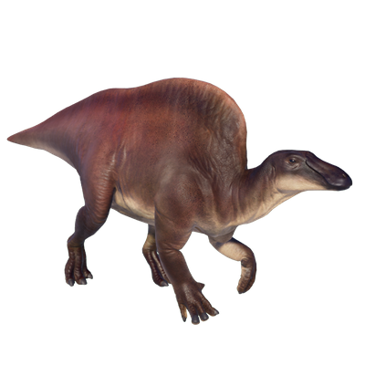

Useful Website
Ouranosaurus is a large iguanodont, averaging around 7m in length and weighing around two and a half tonnes, and is easily recognisable thanks to the large hump on its back. This herbivorous dinosaur is native to Niger in Africa and subsists on a diet of tough vegetation, using its horned beak and flat teeth to tear off and chew plants and leaves. The name Ouranosaurus means ‘courageous monitor lizard’.
